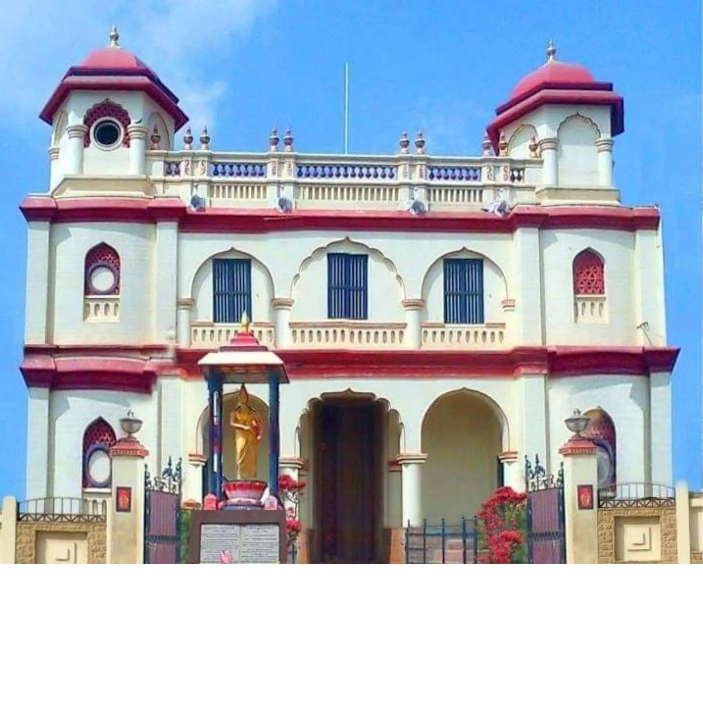
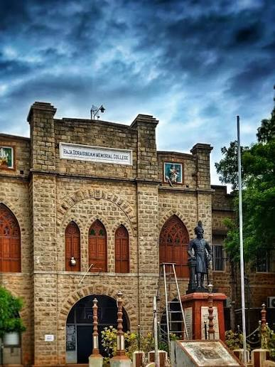
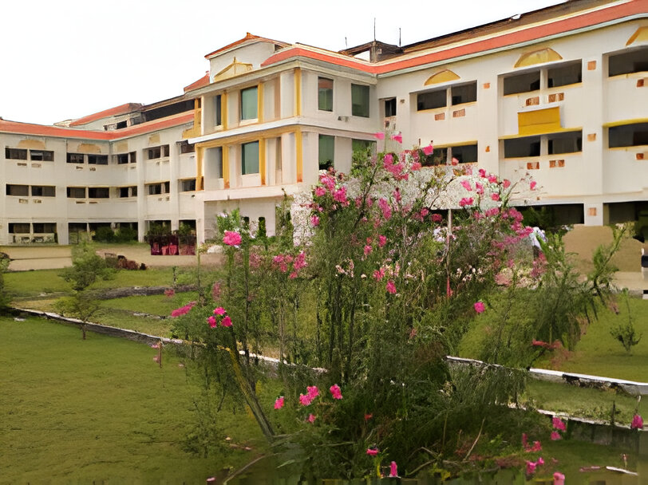
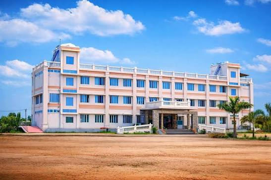

Sivagangai Assembly Constituency is one of the 234 Legislative Assembly constituencies in Tamil Nadu. It is located in Sivagangai District and forms a part of the Sivaganga Parliamentary Constituency. The constituency plays an important role in the political, social, and economic development of the district. Agriculture is the major occupation of the people, while education, healthcare, road connectivity, and drinking water facilities are among the important development priorities. The constituency includes Sivagangai Municipality and several surrounding villages Sivagangai is one of the 38 districts of Tamil Nadu, India. The district headquarters is Sivagangai town. The district was formed in 1985 by separating it from Ramanathapuram district. Sivagangai is known for its rich history, cultural heritage, agriculture, and the bravery of the Maruthu Brothers. The district has an area of about 4,189 square kilometres and a population of around 13.39 lakh people. It includes 9 taluks, 12 development blocks, 3 municipalities, 11 town panchayats, and more than 450 village panchayats. Sivaganga—the headquarters of the Sivaganga district in Tamil Nadu, India—is historically renowned as the seat of a former sovereign kingdom. Located roughly 48 km from Madurai and 449 km from Chennai, it was established as a separate kingdom in 1730 by Sasivarna Periya Udaya Theva

Sivagangai is one of the 38 districts of Tamil Nadu, India. The district headquarters is Sivagangai town. The district was formed in 1985 by separating it from Ramanathapuram district. Sivagangai is known for its rich history, cultural heritage, agriculture, and the bravery of the Maruthu Brothers. The district has an area of about 4,189 square kilometres and a population of around 13.39 lakh people. It includes 9 taluks, 12 development blocks, 3 municipalities, 11 town panchayats, and more than 450 village panchayats.
Sivagangai district is situated in the southern part of Tamil Nadu. It is well known for its historical importance, especially the bravery of the Maruthu Brothers. The district is famous for agriculture, Chettinad culture, temples, and heritage buildings. Paddy, groundnut, cotton, and pulses are the major crops cultivated in the district. The district has four Assembly constituencies Sivagangai is a historic town and district headquarters in Tamil Nadu. Located about 450 km south of Chennai, it is widely known as the cultural heart of the Chettinad region. It is famous for its palatial heritage mansions, rich history of resistance against the British, and vibrant local culture. Sivagangai has a rich historical legacy and was a prominent center of resistance against British rule. It was the seat of Queen Velu Nachiyar—the first Indian queen to fight the British—and the courageous Maruthu Pandiyar brothers, whose historical monuments and temples are still maintained in the area. Karaikudi Tiruppattur Sivagangai Manamadurai CLICK| 1 | Constituency Name | Sivagangai |
| 2 | Constituency Number | 186 |
| 3 | District | Sivagangai |
| 4 | State | Tamil Nadu |
| 5 | Reservation | General |
| 6 | Parliamentary Constituency | Sivaganga |
| 7 | Current MLA | Kulanthai Rani A |
| 8 | Political Party | Tamilaga Vettri Kazhagam (TVK) |
| 9 | Main Occupation | Agriculture |
| 10 | Famous For | Maruthu Brothers, Heritage, Chettinad Culture |
According to the 2026 Tamil Nadu Assembly election results, the MLA of Sivagangai Assembly Constituency is Kulanthai Rani A representing Vettri Kazhagam (TVK). She won the election with 73,737 votes and a victory margin of 15,081 votes
Education is one of the strengths of Sivagangai district. The district has government, aided, and private educational institutions from primary schools to colleges.



Sivaganga is a historically significant town and district headquarters in Tamil Nadu. It is most famous as the cradle of the 18th-century anti-colonial struggle, celebrated for its warrior Queen Rani Velu Nachiyar and the Maruthu Pandiyar brothers, as well as being the heart of the culturally rich Chettinad region. Historical timelines of the Sivaganga Kingdom,Tourist routes for Chettinad mansions and food,Details on the Keeladi archeological findings.
Railway Stations: Sivagangai, Karaikudi, Manamadurai, Devakottai Road
National and State Highways connect the district with Madurai, Trichy, Ramanathapuram and Pudukottai.
Nearest Airport: Airport.
District: Sivagangai
Assembly Constituency: (186)
Parliamentary Constituency: Sivaganga
Official District Website:VISIT